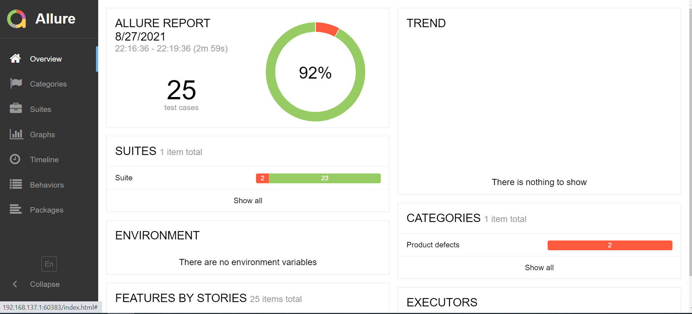

My Automation Project
This project was developed on sylius.com E-Commerce website. Sylius is a E-Commerce website of a fashion store.
The Goal:
Create test cases and secnarios, in order to test Sylius E-Commerce website features and functionality, and build solid automation using Java that tests various use cases and generate reports that display a very concise representation of what have been tested.
Run Conditions
Demos were run in maven, "Chrome version 92.0".
The following technologies were used in the development of this project

A free and open source automation server. It helps automate the parts of software development related to building, testing, and deploying, facilitating continuous integration and continuous delivery. It is a server-based system that runs in servlet containers such as Apache Tomcat. It supports version control tools, including AccuRev, CVS, Subversion, Git, Mercurial, Perforce, ClearCase and RTC, and can execute Apache Ant, Apache Maven and sbt based projects as well as arbitrary shell scripts and Windows batch commands.:

Selenium is a free (open-source) automated testing framework used to validate web applications across different browsers and platforms. You can use multiple programming languages like Java, C# , Python etc to create Selenium Test Scripts.:

Allure Framework is a flexible lightweight multi-language test report tool that not only shows a very concise representation of what have been tested in a neat web report form, but allows everyone participating in the development process to extract maximum of useful information from everyday execution of tests.:

A distributed version-control system for tracking changes in source code during software development. It is designed for coordinating work among programmers, but it can be used to track changes in any set of files. Its goals include speed, data integrity, and support for distributed, non-linear workflows.:
A testing framework for the Java programming language created by Cédric Beust and inspired by JUnit and NUnit. The design goal of TestNG is to cover a wider range of test categories: unit, functional, end-to-end, integration, etc., with more powerful and easy-to-use functionalities.:
A build automation tool used primarily for Java projects. The Maven project is hosted by the Apache Software Foundation, where it was formerly part of the Jakarta Project. Maven addresses two aspects of building software: how software is built, and its dependencies. It uses conventions for the build procedure, and only exceptions need to be written down.:
Benjamin Kun
I gained 3 years experience with manual QA on desktop applications. I can describe myself as autodidact, Highly independent, passionate, with high motivation always to learn as much as possible and develop my skills.
Experience
Embedded QA Engineer
Establishment of manual testing infrastructure for a multidisciplinary system from scratch - smart weapon sight..
- Established manual testing infrastructure for multidisciplinary system – smart sight
- Executed tests of complex multidisciplinary systems including hardware and software PRD.
- Analyzed specification documents and requirements .
- Wrote testing documents – POD, STP, STD, STR.
Test Leader - QA
Leading software testing and system-level testing - planning,\ monitoring, and control the testing activities and tasks of the E -106 project.
- Lead team in project of industrial digital enhancement printer, included responsibility of entire testing cycle
- Planned and conducted training sessions to new members of the team PRD.
- Executed software and system testing.
- Installed software versions to customers worldwide.